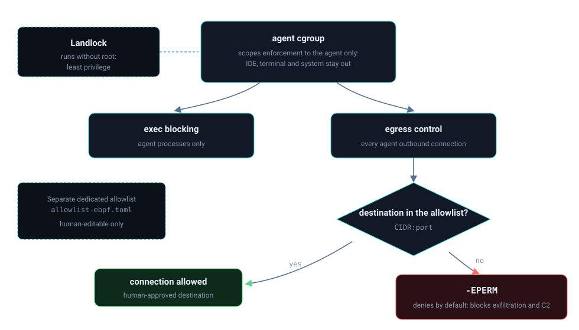

Início/Conceitos/3 · Confinamento do kernel e egress
conceito 3 · confinamentoConfinamento do kernel: capabilities, cgroups, Landlock e egress
Decidir "não" é metade do trabalho. A outra metade é limitar o raio de ação: confinar o bloqueio ao processo certo (cgroup), rodar com o mínimo de privilégio (Landlock, sem root) e cortar a saída de rede que serve à exfiltração e ao C2 (allowlist de egress).
O objetivo não é bloquear o sistema inteiro, só o agente. Por isso o programa eBPF só age sobre processos do cgroup do agente. Para o próprio Nemesis rodar com pouco poder, entra o Landlock, que restringe o que o processo pode executar e tocar sem precisar de root, ligando no_new_privs antes. E para impedir que dados saiam, uma allowlist de egress: por padrão nega tudo, só passa o que está explicitamente liberado.

Do zero: os três mecanismos
Capabilities quebram o poder do root em pedaços: em vez de "tudo ou nada", um processo recebe só a capacidade de que precisa. cgroups (control groups) agrupam processos para a contabilidade e o controle do kernel; cada grupo tem um identificador, o cgroup_id, e é por ele que o sistema sabe "este processo é do agente". Landlock é um LSM que deixa um processo comum se autolimitar (sandbox sem privilégio): ele declara o que pode fazer e o kernel passa a recusar o resto, inclusive para os filhos. Egress é o tráfego de saída; controlá-lo é decidir para onde o processo pode abrir conexão.
Por que importa
Um agente comprometido tende a fazer duas coisas: executar algo destrutivo e mandar dado para fora (exfiltração, ou buscar ordens de um servidor de comando e controle, o C2). Confinar ao cgroup garante que a contenção mire só o agente, não o sistema do usuário. Rodar sem root garante que o próprio Nemesis não seja um vetor de escalonamento. E negar egress por padrão fecha o caminho de saída do dado, que é o objetivo final de boa parte dos ataques.
Como se correlaciona
O escopo por cgroup é o que liga os outros dois ao agente: o gancho de exec do grupo 2 só atua se o processo for do cgroup do agente, e o mesmo vale para a decisão de egress. O Landlock é uma camada complementar no userspace privilegiado-mínimo, e a allowlist de egress é a contrapartida de rede do bloqueio de exec: um corta o que roda, o outro corta para onde fala. Juntos eles transformam "detectei" em "contive sem dano colateral".
Como o Nemesis aplica
O sandbox Landlock liga no_new_privs via prctl (obrigatório para restringir sem CAP_SYS_ADMIN) e declara as classes de acesso que vai controlar:
let r = unsafe { libc::prctl(libc::PR_SET_NO_NEW_PRIVS, 1, 0, 0, 0) };
// ABI V5 (kernel 6.8); degrada em kernels mais antigos
let ruleset_result = Ruleset::default()
.handle_access(AccessFs::Execute)
.and_then(|r| r.handle_access(AccessFs::WriteFile))
.and_then(|r| r.handle_access(AccessFs::ReadFile))
.and_then(|r| r.create());O escopo por cgroup vive no gancho do kernel: se o cgroup do agente não está configurado, ou o processo não é dele, o programa permite e sai. Só processos do agente são verificados:
📄 .nemesis/ebpf-kernel/ebpf/nemesis-block.bpf.c:83-94 · escopo por cgroup do agenteu64 *agent_cgroup = bpf_map_lookup_elem(&agent_cgroup_map, &cgroup_key);
if (!agent_cgroup || *agent_cgroup == 0)
return 0; // cgroup não configurado, permite tudo
u64 current_cgroup = bpf_get_current_cgroup_id();
if (current_cgroup != *agent_cgroup)
return 0; // processo não é do agente, permiteO egress é decidido no gancho socket_connect: com enforce ligado, o destino precisa estar na allowlist (trie LPM por CIDR e porta), senão é -EPERM. A lógica pura da allowlist é fail-closed por construção: lista vazia significa nenhuma conexão.
struct egress_val *val = bpf_map_lookup_elem(&egress_allow_v4, &key);
if (val && (val->port == 0 || val->port == dport))
return 0; // destino allowlistado
egress_emit("ipv4");
return -EPERM; // fora da allowlist, negaDecisões e limites
O egress tem um interruptor de enforce: desligado, ele só observa e loga (modo rollout), um default escolhido para não quebrar a máquina de ninguém antes de a allowlist estar afinada. Famílias de socket que não são rede (como AF_UNIX) são permitidas, porque bloqueá-las quebraria comunicação local legítima.
Capabilities, aqui, são mais postura do que chamada explícita no código: o sistema não exige root e usa no_new_privs para que nem os processos filhos ganhem privilégio. É least privilege aplicado de ponta a ponta.
Auto-checagem
Por que o bloqueio é restrito ao cgroup do agente?
Para conter só o agente, sem afetar o resto do sistema do usuário. Se o processo não pertence ao cgroup do agente, o programa eBPF permite e sai imediatamente.
O que significa a allowlist de egress ser fail-closed?
Que o default é negar: allowlist vazia implica nenhuma conexão de saída permitida. Só passa o que foi liberado de propósito, o que fecha o canal de exfiltração e C2.
Como o Landlock roda sem root?
Ligando no_new_privs via prctl antes de aplicar o ruleset; com isso o kernel aceita a autolimitação sem exigir CAP_SYS_ADMIN.
Para ir além
Citações verificadas contra o repositório. Voltar ao índice.